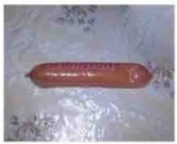

СОБЫТИЕ НЕДЕЛИ
Новости Академгородка
ЮЛИЯ ЯКУБЕНЯ УРОНИЛА ОТВАРНУЮ СОСИСКУ
19 октября около шести часов вечера выпускница НГУ, Юлия Якубеня, закончив отваривать молочную сосиску СПК, подцепила её кончиком вилки, чтобы переместить из кипятка в миску с отварным картофелем. «Я думала, что сосиска прочно держится на зубчиках вилки, но я ошибалась…» — вспоминает девушка.
Находясь примерно на середине пути между пунктом отправления и пунктом назначения, мясной продукт не выдержал тяжести собственного веса и рухнул вниз. «Я пыталась поймать её, но она лишь скользнула по моим ладоням…» — На влажную сосиску моментально налип собачий ворс и кусочки бытовых отходов, покрывавшие пол кухни (и остальных комнат). Однако девушка среагировала молниеносно: «Как только сосиска коснулась пола, я мгновенно подхватила её». Несмотря на ожоги, полученные кипятком и отварным продуктом, Юлия не растерялась и оперативно обмыла мясной снек под холодной водой из крана.

«Я не жалею о том, что произошло», — утверждает девушка. «Иногда за то, что ты любишь, приходится бороться…»
Подготовила: Е.Морозова